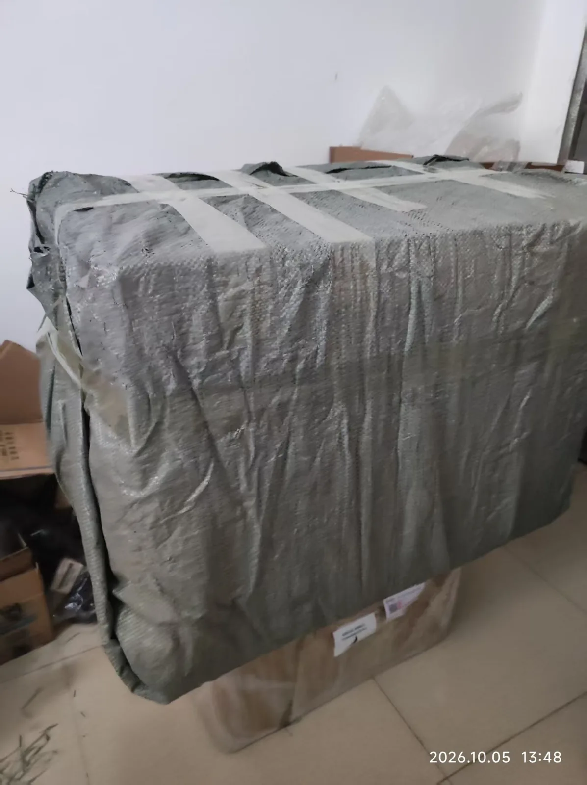
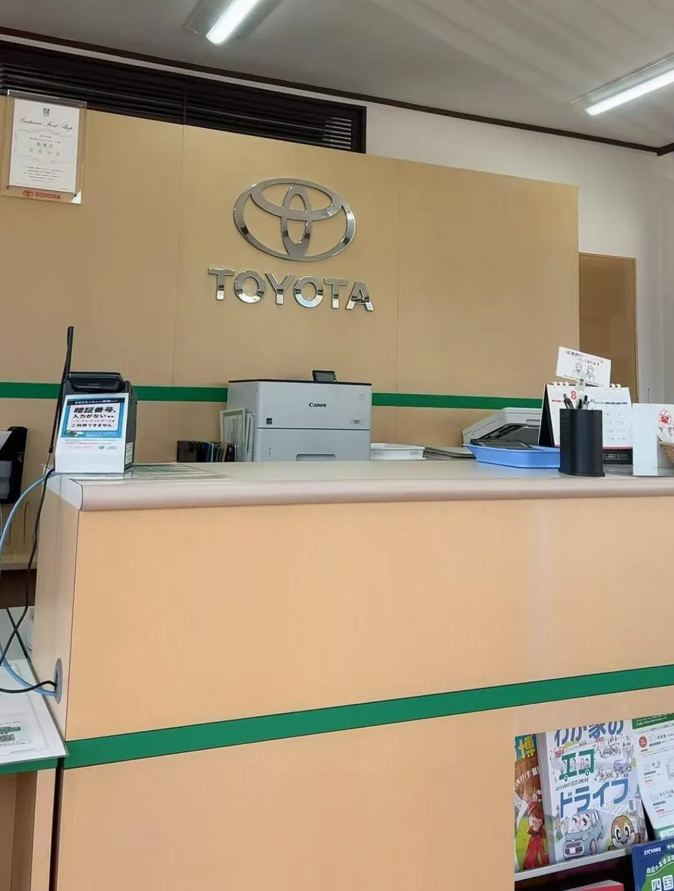
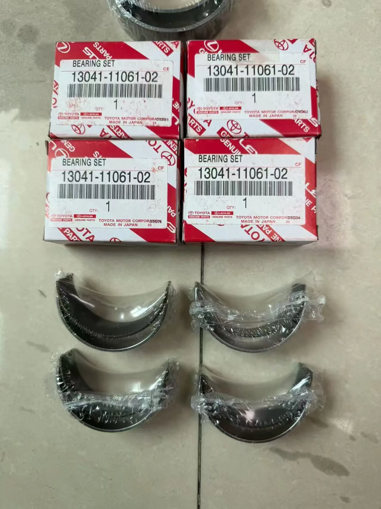
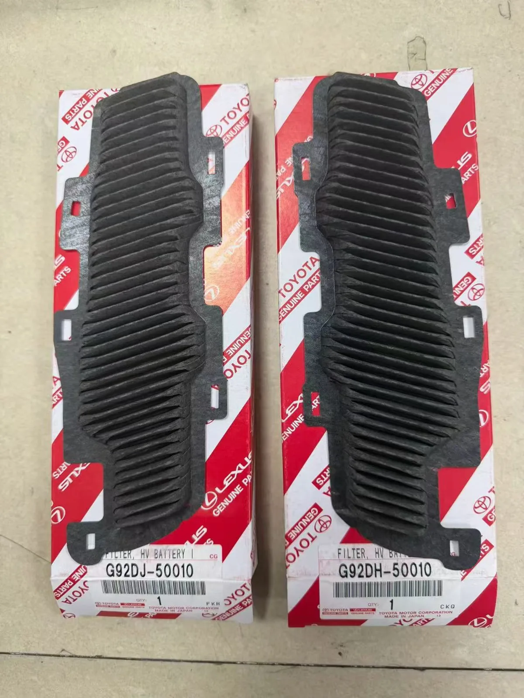
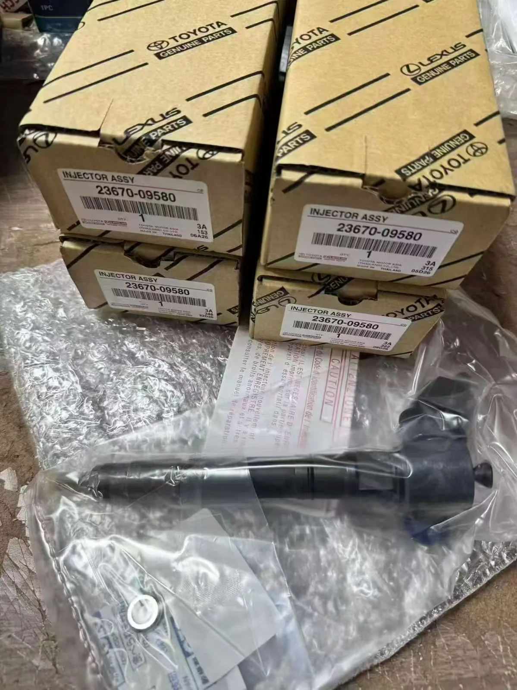
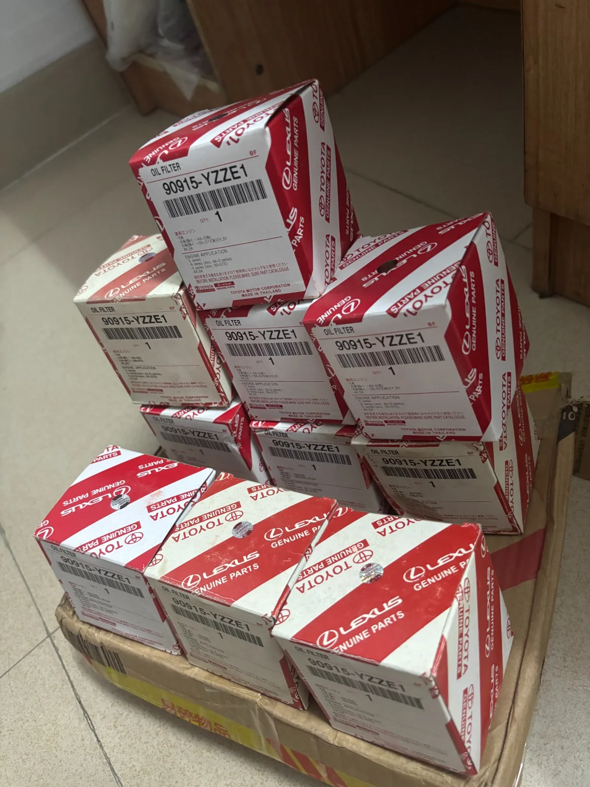
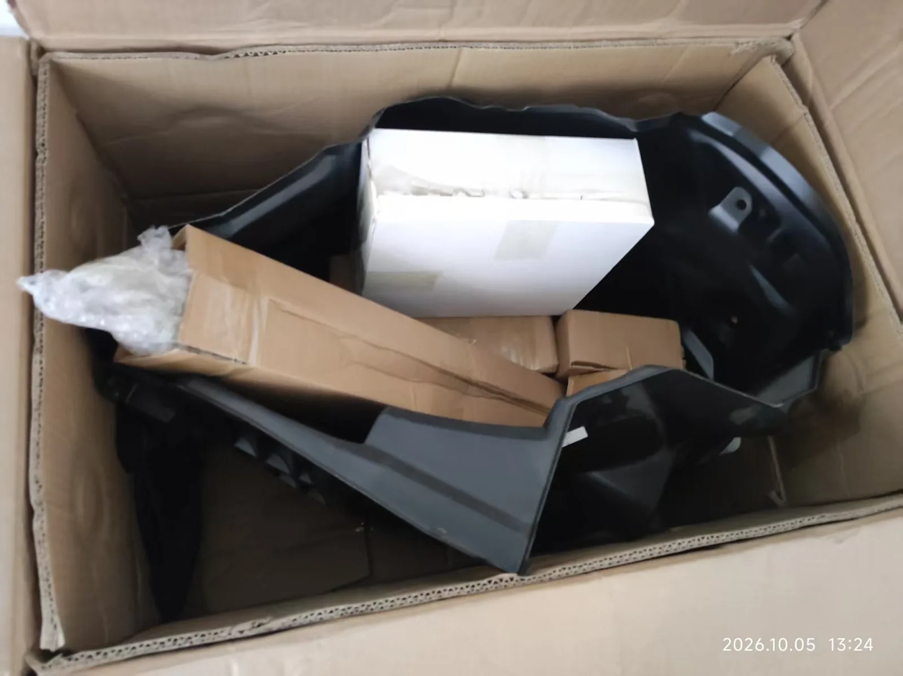

From Facebook to Iraq: A Real Toyota Auto Parts Order Shipped via DHL
How CYJCAR built trust with an overseas customer, arranged Toyota spare parts, received payment through Alibaba and prepared an international shipment to Iraq.

In the international auto parts business, trust matters as much as product selection. When buyers source spare parts from another country, they want clear communication, accurate part identification, reliable payment arrangements and practical shipping support.
Recently, CYJCAR (China Auto Parts) worked with a customer from Iraq who first contacted us through Facebook. After discussing the parts requirements and building trust, we arranged payment through Alibaba and prepared Toyota automotive components for shipping via DHL. These are actual product and packing photos from the order.
1. From a Facebook Conversation to an International Order
Our cooperation began on Facebook, where the customer reached out to discuss Toyota spare parts. We exchanged information about the required products, checked identifying part numbers and discussed how to move forward with the order.
For international buyers, a supplier should be willing to explain the sourcing process and answer questions before payment. We aim to make that communication straightforward and transparent, whether the customer is a repair workshop, distributor or individual parts buyer.

2. Toyota Spare Parts Prepared for the Customer
The order involved several different types of automotive components. The following photographs show the products and part-number labels recorded during preparation.
Toyota Bearing Set — 13041-11061-02
The bearing set pictured below is labeled 13041-11061-02. Engine components must be matched to the correct vehicle and engine specification; part numbers are a useful starting point for confirming the right item.

Toyota HV Battery Filter — G92DJ-50010
The photograph shows two HV battery filters with the visible part number G92DJ-50010. These filters are associated with the ventilation systems of applicable hybrid vehicles. Fitment should be checked against the specific model and vehicle details.

Toyota Fuel Injector Assembly — 23670-09580
The order also included injector assemblies labeled 23670-09580. Fuel injection components are application-specific, so correct identification is important before purchasing or installing replacement parts.

Toyota Oil Filter — 90915-YZZE1
Oil filters are commonly requested maintenance parts. The photograph shows multiple boxes marked 90915-YZZE1, arranged together during order preparation.

Part numbers are transcribed from the photographed labels. Vehicle compatibility and authenticity should be verified against relevant manufacturer information and sourcing documentation before ordering.
3. Payment Arranged Through Alibaba
After confirming the order details, our customer used Alibaba for payment. An established B2B platform can provide a familiar transaction process for overseas customers, although any available buyer protections depend on the specific order and applicable platform terms.
In this case, the Facebook conversation helped establish the relationship, while Alibaba was used for the payment stage.
4. Packing the Order for International Transportation
The shipment contained products of different shapes and sizes, including smaller boxed components and larger molded automotive parts. Preparing a mixed-parts shipment requires attention to arrangement and protection so the contents can be handled during transportation.

We organized the items inside a cardboard carton and used packaging materials suitable for the mix of components. Product identification and practical packing are especially important for international buyers who cannot inspect an order in person before it leaves the supplier.
5. Final Wrapping and DHL Shipping to Iraq
After the parts were arranged, the outer parcel was wrapped in grey protective material and secured with tape, as shown in the actual shipment photo.
DHL was selected to ship the order to Iraq. Courier delivery times depend on destination, customs processing and shipment conditions. Buyers should also ensure that import documentation and local customs requirements are addressed.
This story describes the order and shipping arrangements; it does not claim confirmed delivery or receipt by the customer.
6. What International Buyers Can Learn From This Order
For a buyer sourcing automotive parts from China, the purchasing process often starts with a simple inquiry. Clear part numbers, product photographs, agreed payment terms and communication about packing and shipping all help the buyer make an informed decision.
Our experience with this Iraq customer shows how an initial Facebook connection can develop into an overseas order supported by Alibaba payment and DHL shipping arrangements.
Looking for Toyota Spare Parts From China?
CYJCAR supports overseas buyers looking for Toyota parts and other automotive components. If you are sourcing for a workshop, wholesale business or spare parts store, send us the part number, required quantity, vehicle details and destination country.
We welcome inquiries from Iraq, the Middle East and international markets.
Need a quotation for automotive spare parts?
Share your parts list with our team and discuss your sourcing requirements.
Request a Quote on WhatsApp →Other Contact OptionsToyota and Lexus are trademarks of their respective owners. CYJCAR is an independent auto parts supplier and is not affiliated with or endorsed by the vehicle manufacturers referenced here.